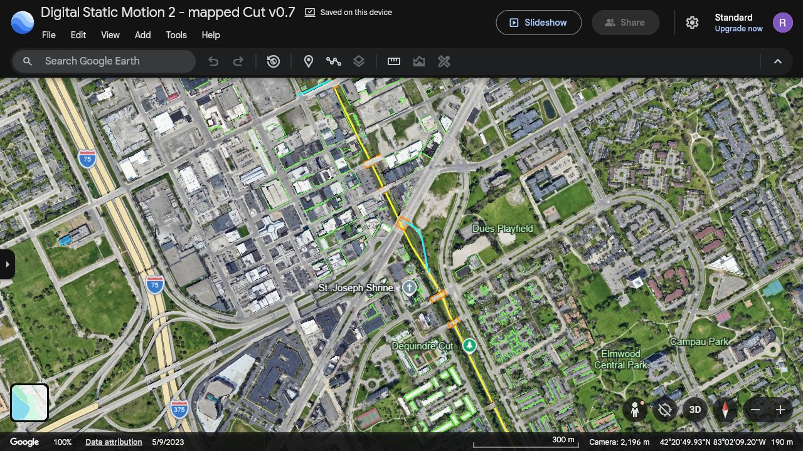

The mapped game contains 329 building envelopes, 11 overpass decks, three graded entry ramps and 291 retaining-wall modules. The selected Cut centerline is 2,629.24 metres long. Gratiot trail center is local (0,0,0): 42.3472034, −83.0358912.
The KML overlays the active runtime footprints, trail, ramps and decks on Google Earth satellite imagery. Walls and their estimated offsets are shown in the SVG audit. Gratiot was visually inspected; this is not a completed metre-by-metre survey of the entire route.

| Flag | Scope | Correction needed |
|---|---|---|
| GEO-01 | Named addendum | The referenced updated markdown was not present in the searched project/Downloads paths. Integration followed the requirements pasted into the conversation. |
| GEO-02 | All building edges and centreline | OSM coordinates are mapped; satellite residuals were not numerically measured. Check ground corners rather than displaced roof edges. Account for imagery date, roof parallax and simplified local projection. |
| GEO-03 | Vertical profile | Grading uses historical 2013 design levels plus interpolated estimates. Deck thickness, abutment depth, southern grades and current ramp elevation need an as-built survey. |
| GEO-04 | Walls, murals, vegetation | Wall modules follow the mapped corridor using estimated offsets. Existing original Higgsfield art and materials are retained. Exact mural locations, plants and segment-specific textures require further panorama inspection. |
| GEO-05 | North trail and building heights | Reconcile the historical 15-foot northern cross-section with the Conservancy's general 20-foot description. Tagged/estimated building heights and facades are not photogrammetric reconstructions. |
| GEO-06 | Street View coverage | Gratiot panorama resolved but rendered black. The existing Chestnut historical reference and gallery context do not validate every segment. |
The full corridor, 11 overpasses and three ramps pass static clearance checks. Motion 3 completed a 2,558.3 m mapped simulation ride with no crash and 0.597 m maximum centreline drift. Ramp segments support uphill simulation. Pedestrians and cyclists remain moving obstacles that the player must avoid.
Structural GLB · Active building footprints · Placement manifest
1 world unit = 1 metre. Displaying seven GPS decimals does not imply surveyed accuracy. No blanket claim of precise Google registration is made.